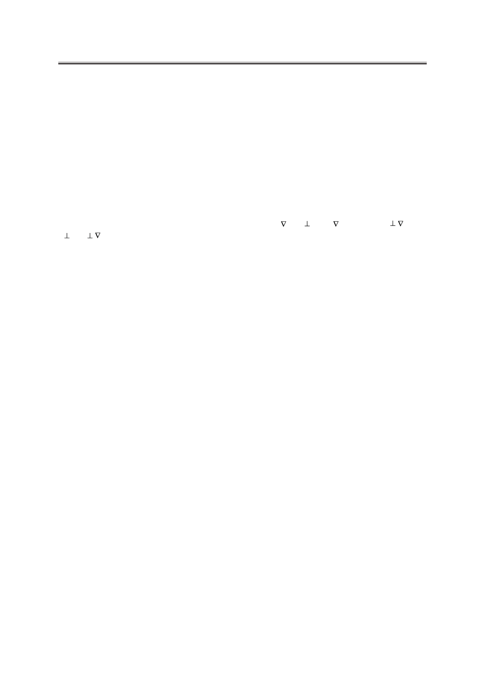

С.В. Пасечник, Д.В. Шмелева, А.В. Торчинская, О.А. Семина, А.А. Дюкин
зано с полем директора n (r,t). Это приводит к ряду новых гидродинамических эффектов,
таких, как ориентация НЖК потоком, зависимость эффективной сдвиговой вязкости от скоро-
сти потока (неньютоновское поведение), возникновение специфических гидродинамических
неустойчивостей и обратного потока при быстром включении (выключении) электрического
поля [7]. Последний эффект имеет практическое значение, так как он может определять суще-
ственные изменения в быстродействии жидкокристаллических устройств.
Теоретическое описание упомянутых выше явлений основывается на гидродинами-
ческой теории Лесли-Эриксена, которая включает в себя шесть диссипативных параме-
тров (коэффициентов Лесли αi), связанных одним уравнением. Различные комбинации
этих параметров определяют три основных коэффициента сдвиговой вязкости (вязкости
Мезовича ηi), соответствующие трем различным ориентациям директора относительно
направления скорости потока v и градиента скорости v (n v, n || v –η1; n||v, n v –η2;
n v, n v –η3).
Классический метод экспериментального определения вязкостей Мезовича основан
на использовании сильных магнитных полей, которые стабилизируют ориентацию НЖК,
протекающего через плоский капилляр [8]. В этом случае жидкий кристалл ведет себя как
анизотропная ньютоновская жидкость со сдвиговой вязкостью, зависящей от ориентации
ЖК. В отличие от изотропных жидкостей, реологическое поведение НЖК в потоке Пу-
азейля через капилляры с круглым поперечным сечением является более сложным, чем
для потоков через плоские капилляры. Тем не менее, ранние эксперименты такого типа
обеспечили первую экспериментальную проверку теории Лесли-Эриксена [9]. В част-
ности, предсказанное теорией существование универсальной зависимости эффективной
сдвиговой вязкости от диаметра и объемной скорости потока Q=dV/dT (V−перекачивае-
мый объем) было подтверждено экспериментами с потоком НЖК через капилляры раз-
ного диаметра при нормальной поверхностной ориентации жидкого кристалла. Стоит от-
метить, что детальное теоретическое описание указанных выше потоков возможно лишь
путем численного решения нелинейных уравнений гидродинамики НЖК [10].
В описанных ниже экспериментах успешно использован метод затухающего пото-
ка Пуазейля, разработанный ранее для измерения вязкости НЖК, стабилизированных
внутренними поверхностями плоских капилляров [7]. При этом полимерную пленку,
заполненную жидким кристаллом, можно рассматривать как совокупность цилиндриче-
ских пор субмикронного диаметра. Отличительной особенностью такой структуры явля-
ется возможность образования различных типов ориентационных конфигураций внутри
поры, что может привести к различным значениям эффективной сдвиговой вязкости. Эф-
фекты слабого поверхностного сцепления и влияние сильных ограничений на диссипа-
тивные параметры НЖК могут также иметь важное значение. В частности, условие силь-
ного поверхностного сцепления, допустимое для стеклянных капилляров достаточно
большого диаметра (порядка 100 мкм), безусловно, не подходит для пор субмикронных
диаметров. Данный факт необходимо принимать во внимание при анализе результатов
реологических исследований.
Затухающий поток в измерениях сдвиговой вязкости
В простейшем случае затухающий сдвиговый поток возникает в канале длины L под
действием гидростатического градиента давления, который создается с помощью разно-
Российский технологический журнал 2017 Том 5 № 5
27